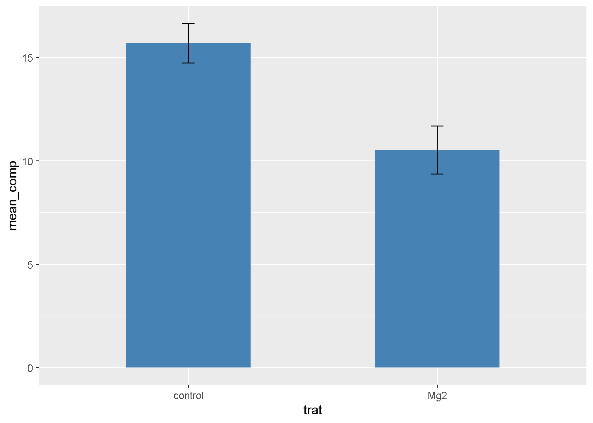
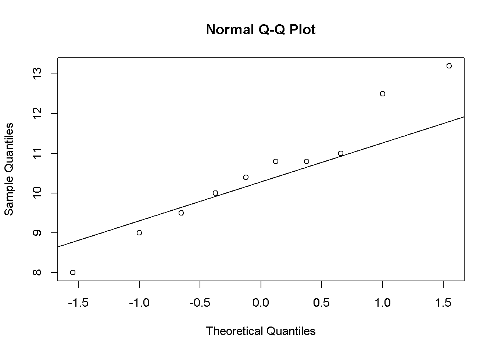
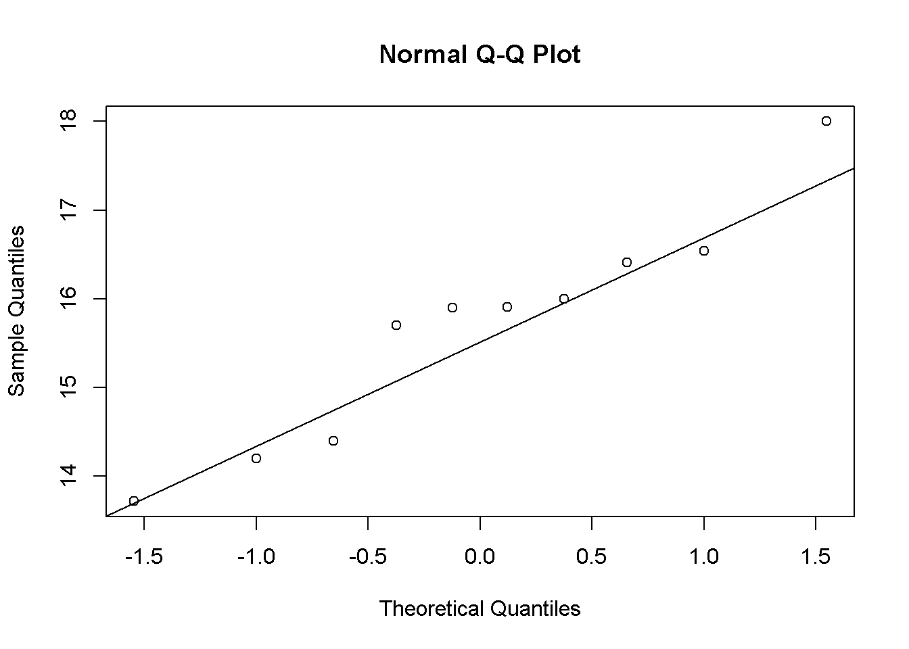

library(magrittr) # para usar pipes
library(ggplot2) # para gráficos
library(dplyr)
library(readxl)
library(tidyr)Teste T (Dependentes e Pareadas)
Selencionando pacote:
Conjunto de dados:
data_mg <- read_excel("dados-diversos.xlsx") # paramétrico
dat2 <- data_mg |>
group_by(trat) |>
summarise(mean_comp = mean(comp),
sd_comp = sd(comp),var_comp = var(comp), n = n(),
se_comp = sd_comp / sqrt(n - 1),
ci = se_comp * qt(0.025, df = 9))
dat2# A tibble: 2 × 7
trat mean_comp sd_comp var_comp n se_comp ci
<chr> <dbl> <dbl> <dbl> <int> <dbl> <dbl>
1 Mg2 10.5 1.54 2.39 10 0.515 -1.16
2 control 15.7 1.27 1.61 10 0.424 -0.958Gráficos:
dat2 |>
ggplot(aes(trat, mean_comp))+
geom_col(width = 0.5,
fill = "steelblue")+
geom_errorbar(aes(
ymin = mean_comp - ci,
ymax = mean_comp + ci
),
width = 0.05
)
Estatística
Teste T:
data_mg2 <- data_mg |>
pivot_wider(1, names_from = trat, values_from = comp)
data_mg2# A tibble: 10 × 3
rep Mg2 control
<dbl> <dbl> <dbl>
1 1 9 13.7
2 2 12.5 15.9
3 3 10 15.7
4 4 8 14.2
5 5 13.2 15.9
6 6 11 16.5
7 7 10.8 18
8 8 9.5 14.4
9 9 10.8 16.4
10 10 10.4 16 t.test(data_mg2$Mg2, data_mg2$control, paired = F)
Welch Two Sample t-test
data: data_mg2$Mg2 and data_mg2$control
t = -8.1549, df = 17.354, p-value = 2.423e-07
alternative hypothesis: true difference in means is not equal to 0
95 percent confidence interval:
-6.490393 -3.825607
sample estimates:
mean of x mean of y
10.520 15.678 Teste de variâncias homegênias:
attach(data_mg2)
var.test(Mg2, control)
F test to compare two variances
data: Mg2 and control
F = 1.4781, num df = 9, denom df = 9, p-value = 0.5698
alternative hypothesis: true ratio of variances is not equal to 1
95 percent confidence interval:
0.3671417 5.9508644
sample estimates:
ratio of variances
1.478111 Shapiro (normalidade):
shapiro.test(Mg2)
Shapiro-Wilk normality test
data: Mg2
W = 0.97269, p-value = 0.9146shapiro.test(control)
Shapiro-Wilk normality test
data: control
W = 0.93886, p-value = 0.5404Análise visual da premissa de normalidade:
qqnorm(Mg2)
qqline(Mg2)
qqnorm(control)
qqline(control)
escala <- read_excel("dados-diversos.xlsx", "escala")
head(escala)# A tibble: 6 × 7
assessment rater acuracia precisao vies_geral vies_sistematico vies_constante
<chr> <chr> <dbl> <dbl> <dbl> <dbl> <dbl>
1 Unaided A 0.809 0.826 0.979 1.19 0.112
2 Unaided B 0.722 0.728 0.991 0.922 -0.106
3 Unaided C 0.560 0.715 0.783 1.16 0.730
4 Unaided D 0.818 0.819 0.999 0.948 -0.00569
5 Unaided E 0.748 0.753 0.993 1.10 0.0719
6 Unaided F 0.695 0.751 0.925 0.802 0.336 escala2 <- escala |>
select(assessment, rater, acuracia)
escala2|>
pivot_wider(1,
names_from = assessment,
values_from = acuracia)# A tibble: 10 × 3
rater Unaided Aided1
<chr> <dbl> <dbl>
1 A 0.809 0.907
2 B 0.722 0.913
3 C 0.560 0.915
4 D 0.818 0.960
5 E 0.748 0.959
6 F 0.695 0.903
7 G 0.807 0.851
8 H 0.781 0.880
9 I 0.776 0.950
10 J 0.618 0.944Teste T
#attach(escala2)
#t_escala <- t.test(Aided1, Unaided,paired = TRUE,
#var.equal = FALSE) # Resultado: há efeito da escala
#var.test(Aided1,Unaided) # Homocedasticidade
#shapiro.test(Aided1) # Normalidade. p-value maior que 0,05, então não rejeita H0, logo os valores são homogeneos.
#shapiro.test(Unaided) # p-value maior que 0,05, então não rejeita H0, logo os valores são homogeneos.
#library(report)
#report(t_escala)
#wilcox.test(Aided1, Unaided) # Teste não paramétrico equivalente ao teste t pareado. Utilizar esse teste se houvesse problemas com a normalidade e homocedaticidade.
#escala |>
#ggplot(aes(assessment, precisao)) +
#geom_boxplot(outlier.color = NA)wilcoxteste é o teste nao parametico equivalente ao teste -t parametrico.